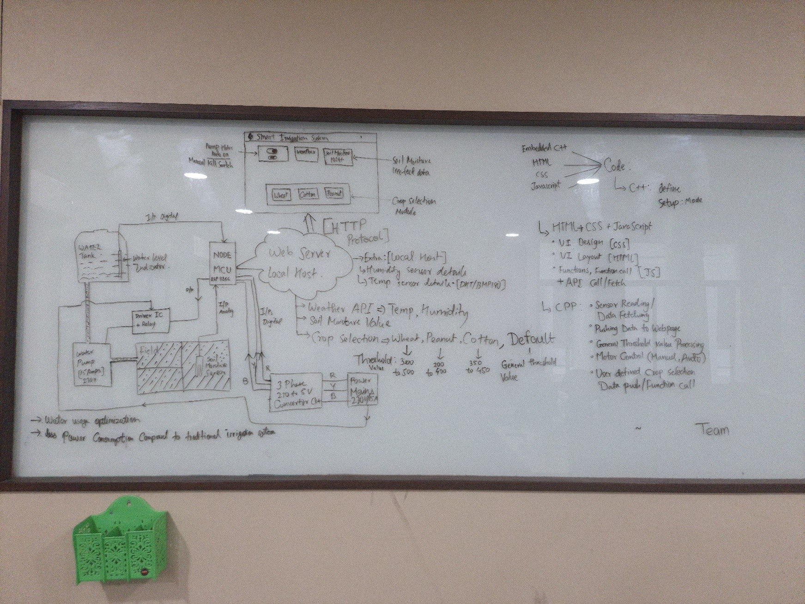
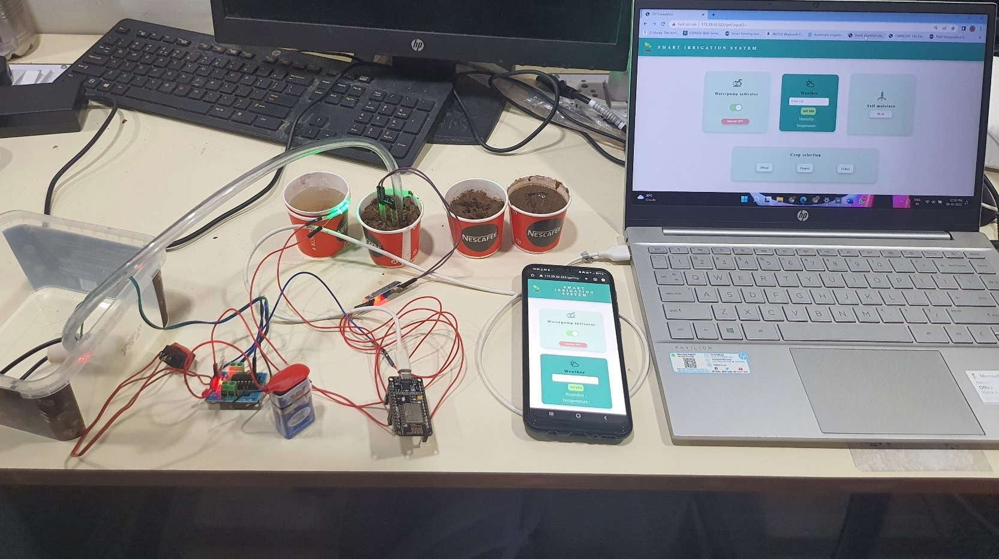
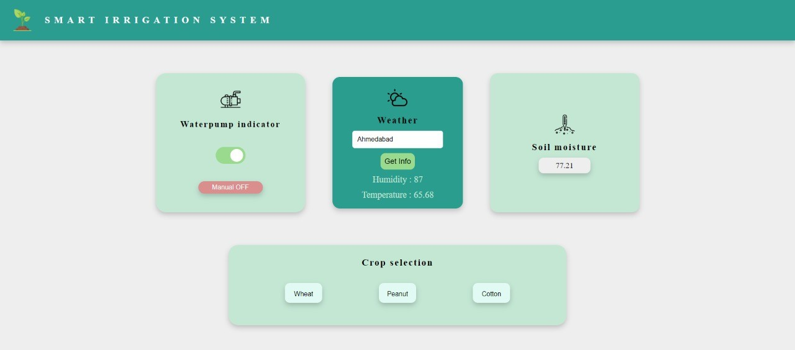
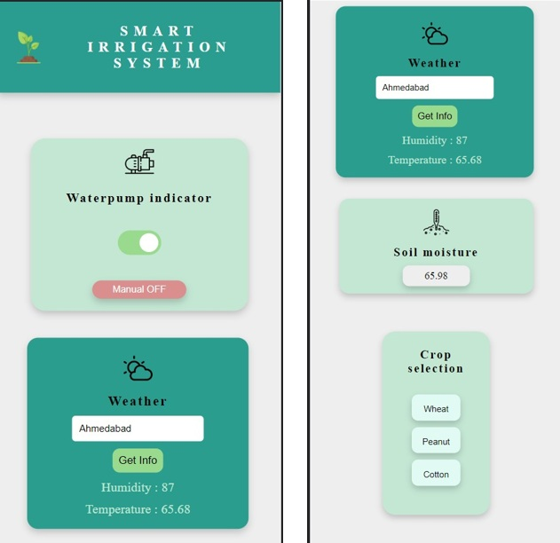

ESP32 Smart Irrigation Nodes
Smart irrigation that actually works in the field. I built ESP32-based sensor nodes with LoRa radio for long-range communication, plus a web and mobile app so farmers can monitor and control everything from their phone.

ESP32 irrigation Block Diagram

ESP32 irrigation Basic Setup

ESP32 irrigation Site

ESP32 irrigation mobile site
The Problem
Most irrigation systems still run on dumb timers, water goes on at 6 AM whether the soil is dry or soaked from last night's rain. Fields are big, Wi-Fi doesn't reach, and farmers need something that just works without expensive infrastructure.
How I Built It
Each node is an ESP32 paired with soil moisture and temp/humidity sensors. The firmware handles sensor sampling, local decision-making (water or don't water), allows crop selection which is precisely setup for particular soil, location and current climate and communication. The interesting part is the networking. I used Wi-fi for this setup but I made the upgaded version with a LoRa radio for long-range, low-power communication between nodes spread across the field. A gateway node bridges the LoRa mesh to Wi-Fi for cloud connectivity.
On the user side, I built both a web interface and a mobile site. Farmers can see real-time soil conditions, check node status, review watering history, and manually override the automatic scheduling when they want to. The system can also pull weather forecasts to skip watering cycles before predicted rainfall.
Tech Stack
Results
- Won a hardware making competition first price in 52 teams!
- Web + mobile app for real-time monitoring and manual override
- Full-stack IoT system firmware, radio networking, API calls and UI
What I Took Away
This was my lucky IoT project from sensor to screen, and it taught me the messy reality of deploying electronics outdoors, antenna placement, power budgeting, weatherproofing. The LoRa networking was particularly satisfying because getting reliable, long-range wireless on a shoestring budget felt like a genuine engineering win.